Что посмотреть, послушать и куда сходить — коротко, со ссылкой на источник и на полный текст.
Элиа Сулейман снял фильм, в котором герой почти ни на что не влияет — и именно поэтому зритель остаётся наедине с собственными выводами.
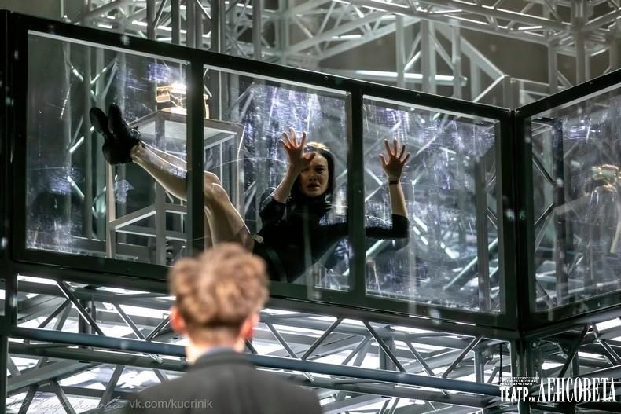
Отзыв, написанный не для того, чтобы порекомендовать, а чтобы отрефлексировать увиденное — по горячим следам премьеры в театре им. Ленсовета.
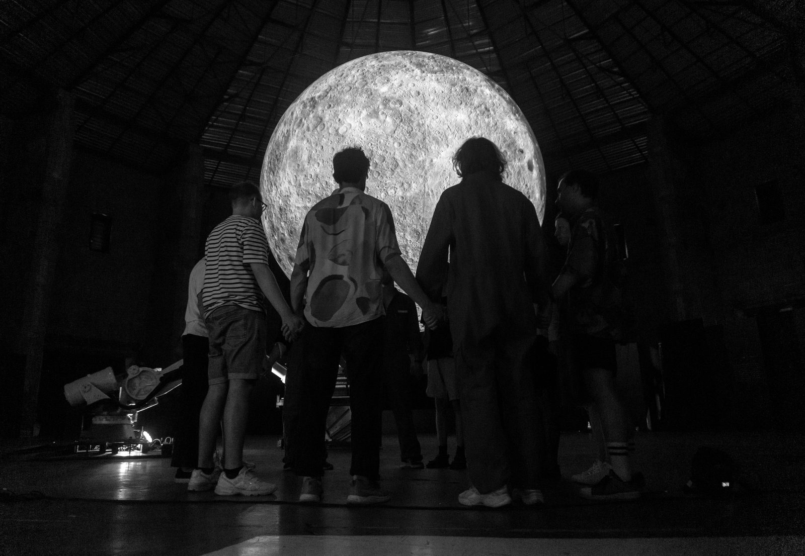
О рождении спектакля «Робот Костя» — первого в России роботического театра, где Чеховские страсти оказались подвластны и роботам.
Стихи, которые с каждым разом находят всё большее дыхание в музыке — и слушать их становится интереснее, чем многие песни.
«Ход королевы» сделал шахматы доступными даже для тех, кто брал в руки ферзя пару раз в жизни.
С приездом Теодора Курентзиса абсолютом города стал Дом Радио. Текст о пространстве, в которое приходишь, чтобы измениться.
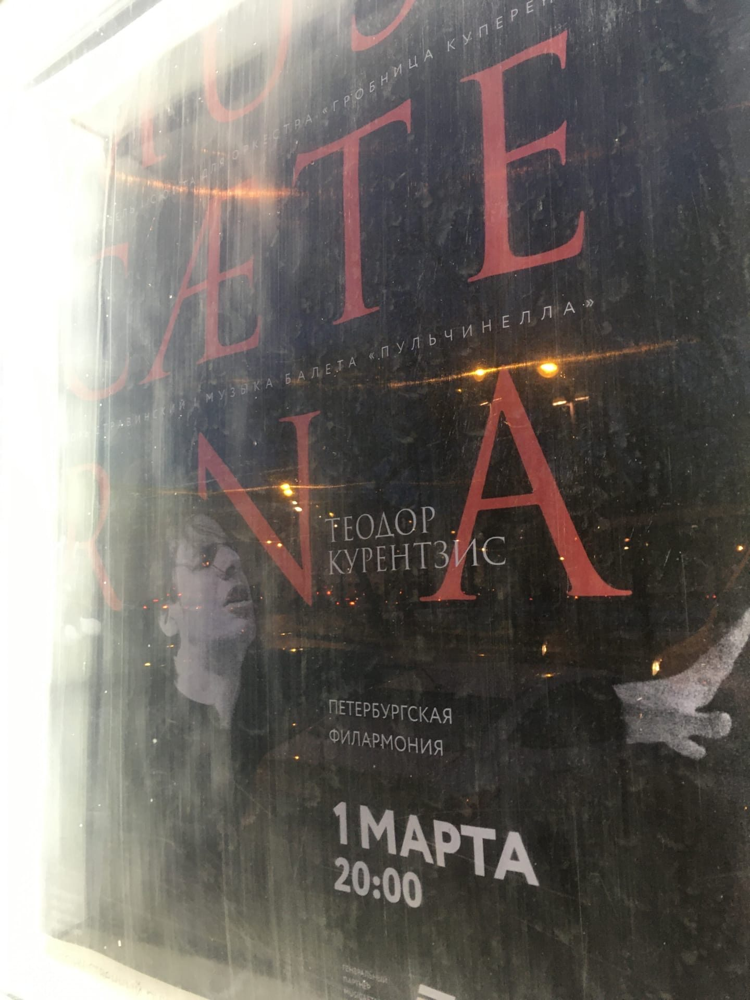
Дебюсси, Равель, Стравинский и Эрик Сати в один вечер в Петербургской филармонии — и зал, переродившийся вместе с музыкой.
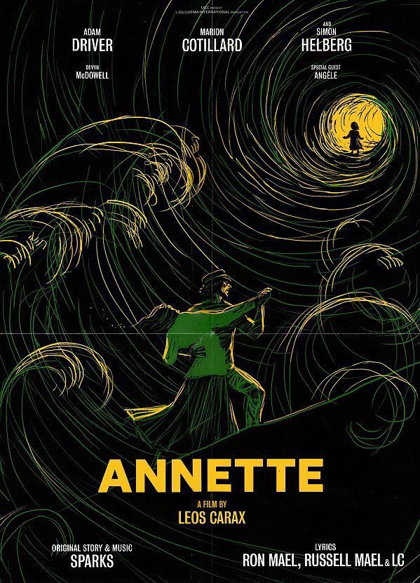
Фильм Леоса Каракса, в котором конец истории не становится её пределом — предел каждый устанавливает сам.
Момент, когда проблема эйджизма теряет смысл: ей 50, и она вневременная.
Фильм Натальи Кудряшовой — стихами, о городе, сжатом снегом, и о том, готов ли ты взлететь.
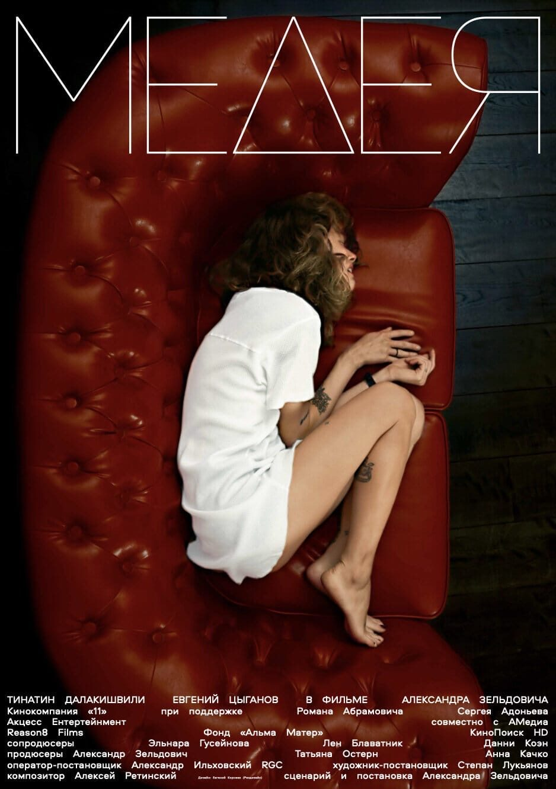
Фильм Александра Зельдовича, где слова не конкурируют с музыкой — а вопрос остаётся один: ты меня понимаешь?
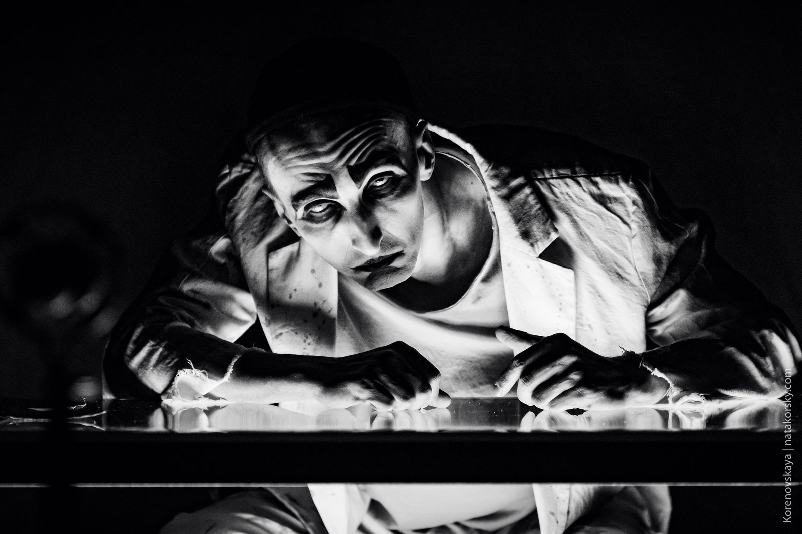
Вертинский во плоти на «7-м ярусе» Александринского театра — и вопрос о том, насколько человек беззащитен и ограничен своим телом.
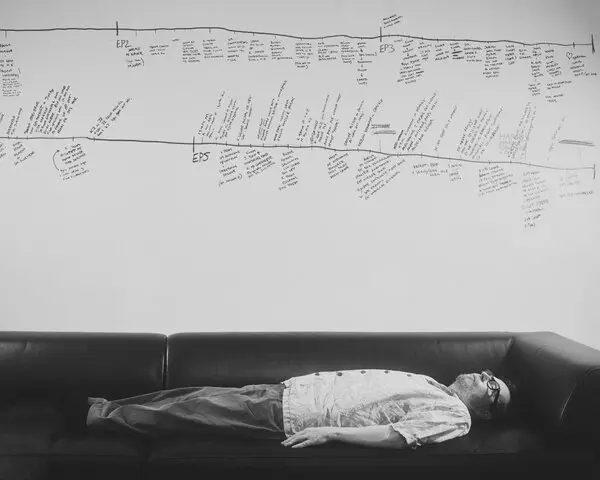
О том, что искусство не всегда спасает — и о попытке просто «дальше жить».
Шесть коротких впечатлений подряд — от «Прыгунов» до бэкрумсов: чем зацепил и почему тренд на люминальные пространства так хорош, пока разгадка не наступила.
Посмотрел бесплатно — и это, конечно, впечатляет: огромный бюджет, ремесленно выстроенный конфликт. Но контекст всех обвинений будто вычищен подчистую.
Хороший состав, красивая картинка — и всё равно фильм рассыпается. О том, когда актрисе рано быть режиссёром.
Титры идут почти в середине картины — и это оказывается ровно тем самым приёмом. Про пожилую пару, цветы и премиум-версию вознесения.
Первый цветной фильм режиссёра, где не хватало даже имеющегося цвета — а тема оказалась про кризис всего.
Чёрно-белая картина, в финале которой герою рубят голову, но не смыслы. Один из немногих поводов пойти в Дом Радио на такое.
Всё прекрасно выверено и хорошие ходы — но ощущение, будто режиссёр совсем постарел.
Мир на грани исчезновения, превращённый в большую помойку. Спектакль не для случайных зрителей — и почти манифест театрального зрителя внутри рецензии.
Актёрский состав нешуточный, оператор снимал Балабанова — и всё равно фильм пытается выдавить слёзы пошло построенным романом.
Гениальный советский пианист и композитор, которого министерство культуры не спешит показывать миру, хотя само же его и профинансировало.
Свободный каст готов на всё ради искусства — но фильм тонет в претензии на смыслы, которых там, кажется, и не было.
Скорсезе, омоложенные Де Ниро и Пачино, 309 сцен на 117 локациях — и герой, который просто плывёт по течению, потому что душа ему не нужна.
Макбёрни справился с романом Цвейга, не разгадав до конца, как это сделано. Бондарь не справилась с прозой Водолазкина — и с пространством малой сцены заодно.
Ждал очередную русскую депрессуху, получил литературно-религиозную историю, достойную Достоевского. Максим Суханов — лучшая роль в российском кино за год.
Проблема толерантности стоит во главе всех наших проблем. Захаров кричал об этом ещё при советской цензуре — сейчас это звучит только громче.
Диванные критики назвали его порно для интеллектуалов, а прокат в нашей стране запретили. О том, что бывает, если попал не в свой мир — или не в своё время.
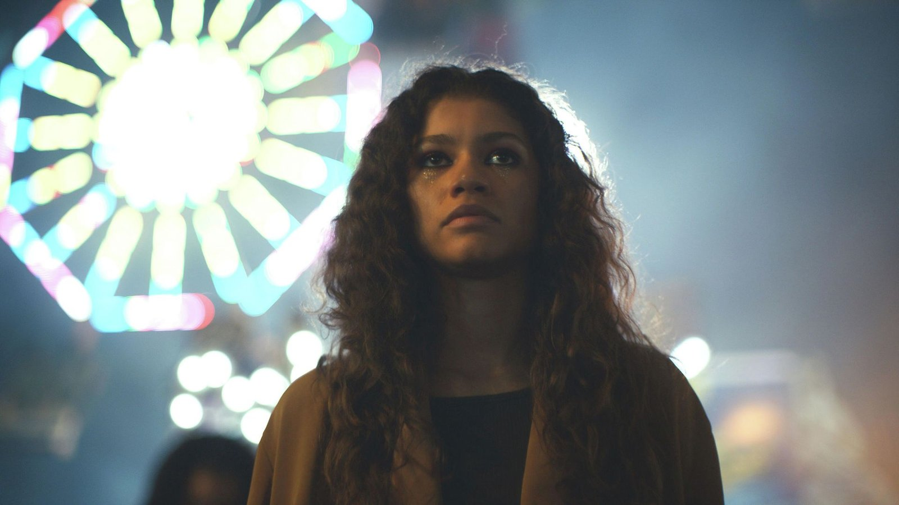
Портрет современного человека, предпочитающего электронное общение живому — и цена, которую за это платят.
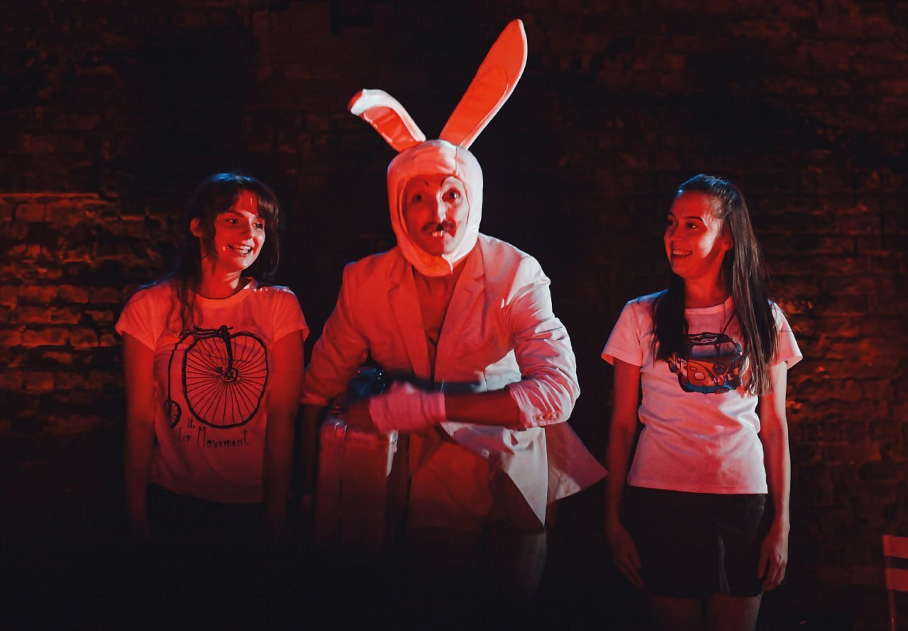
Пишу уже второй пост про один и тот же спектакль Ромы Кагановича — потому что проговаривать однотипные фразы про качество произведения искусства слишком пошло.
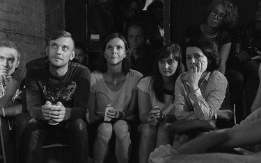
В дни фестиваля молодой драматургии Театр.doc рвётся от напряжения и счастья — а лучшее из читок можно смотреть, не выезжая из своего города.
Курентзис превратил Пермь из захолустной провинции в культурный центр — а потом его «изгнали» на родину ученических лет, в Петербург.
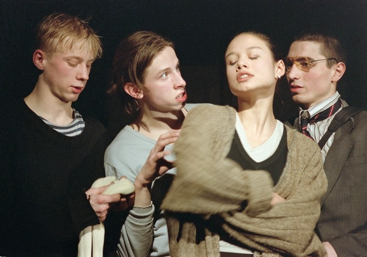
Театр Ленсовета так и не опубликовал запись легендарной постановки Юрия Бутусова. Приходится вспоминать по видео, выложенному добрыми людьми.
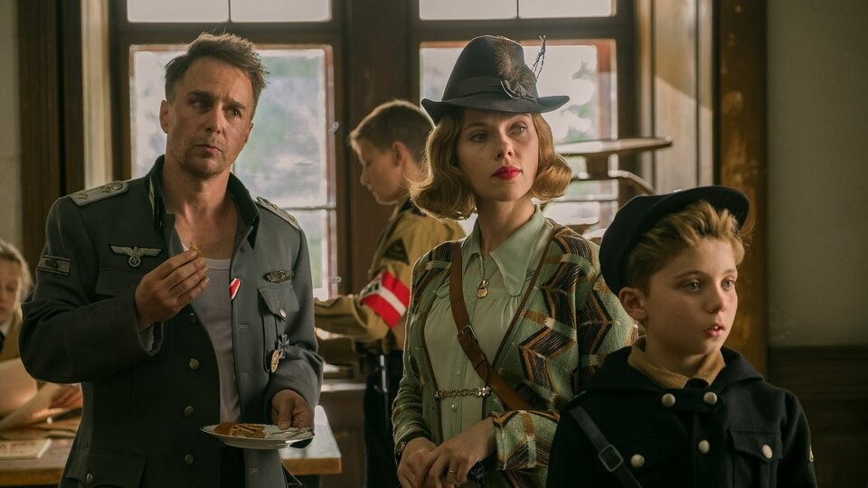
Тайка Вайтити сыграл Гитлера как воображаемого друга десятилетнего мальчика — и получилась редкая удачная форма, слитая с содержанием.
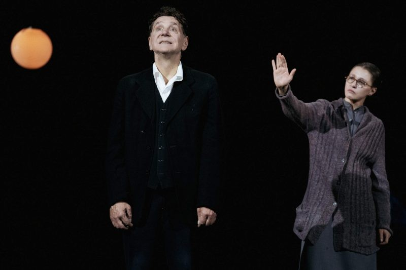
Десять лет прошло с премьеры, приёмы уже смотрятся архаично — а катарсис всё равно случается, даже через экран.
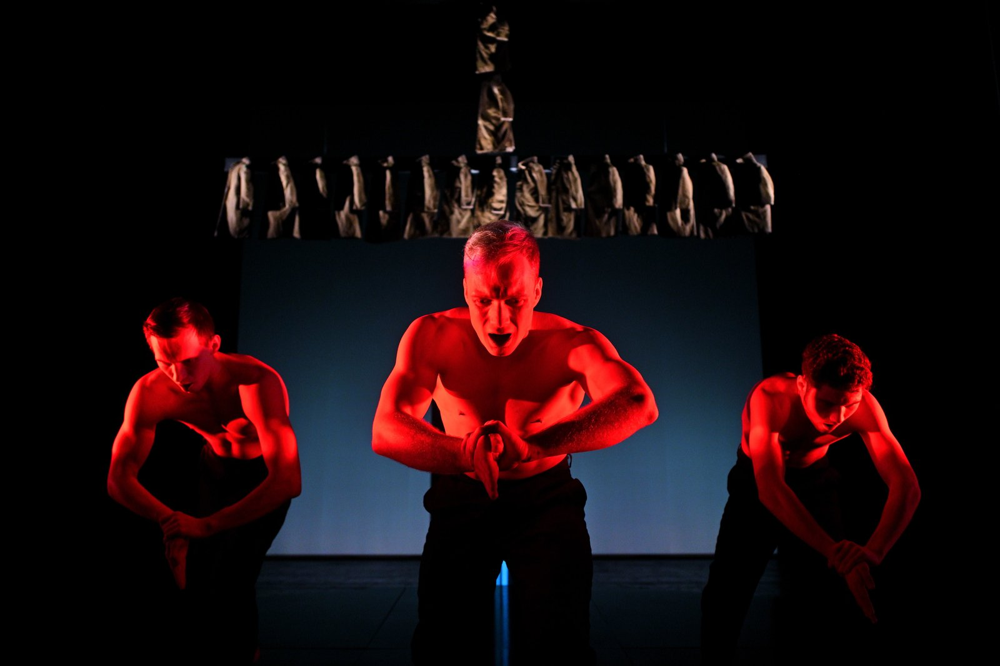
Александринский показал премьеру онлайн — и это на 180 градусов повернуло представление о театре на видео. Понимания хватило процентов на двадцать, но и этого достаточно.
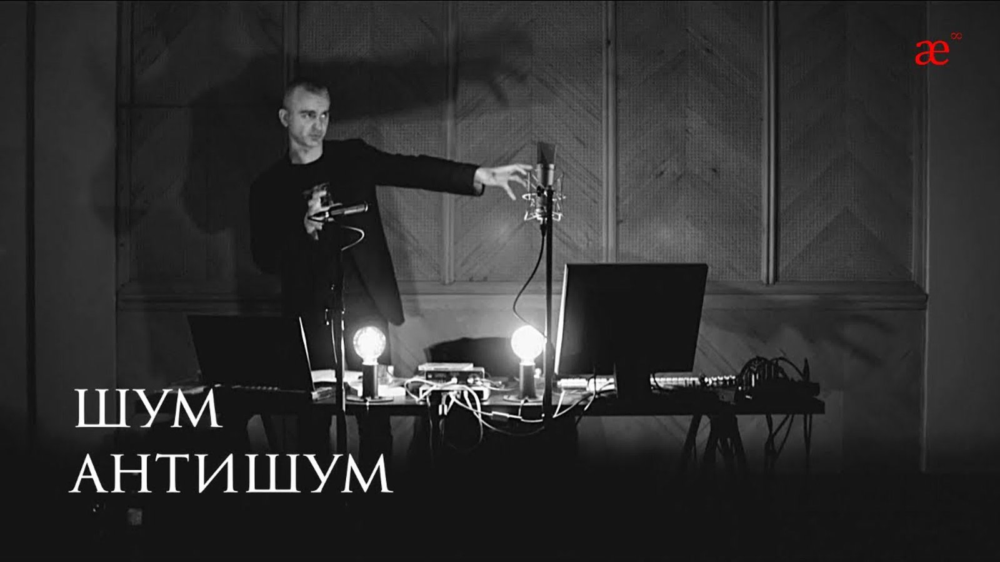
О физике звука, ставшей формой искусства — и о пространстве, которое невозможно просто скачать: только впустить в себя и прочувствовать.